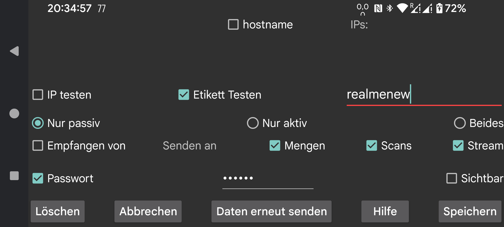

ar be de es fr hi it ja ko nl pl pt ru sv tr uk uz zh en
Geben Sie eine Verbindung mit einer anderen Instanz von Juggluco an. Ein Juggluco auf einem Gerät sendet über IP/TCP Daten an einen Juggluco auf einem anderen Gerät. Um eine Verbindung herzustellen, muss einer der Juggluco's auf einem Port lauschen und der andere muss Kontakt zu diesem Port herstellen. Der Port, auf dem diese Instanz von Juggluco lauscht, wurde auf dem vorherigen Bildschirm angegeben (Linkes mittleres Menü-> Klon). Hier gibst du den Port an, mit dem diese Instanz von Juggluco Kontakt aufnimmt, wenn sie aktiv Kontakt aufnimmt. Wenn diese Instanz von Juggluco nicht auf einem Port lauschen kann, wählen Sie "Nur aktiv". Wenn die andere Seite keinen Port abhören kann, wähle "Nur passiv", andernfalls lasse "Beide" markiert. Der Juggluco auf der anderen Seite sollte "Nur passiv" angeben, wenn du hier "Nur aktiv" auswählst und "Nur aktiv", wenn du hier "Nur passiv" auswählst und "Beide", wenn du hier "Beide" auswählst.
Wenn diese Instanz von Juggluco aktiv Kontakt aufnimmt, sollten Sie die IP(s) angeben, mit denen sie Kontakt aufnehmen soll. Wenn dieser Host mehrere IPs hat, geben Sie mehr als eine an; zum Beispiel, wenn zwei Geräte manchmal über ein Heimnetzwerk und manchmal direkt als tragbarer Hotspot verbunden sind. Geben Sie niemals die IPs mehrerer Geräte an, da diese dann jeweils nur einen Teil der Daten erhalten.
In allen Fällen außer "Nur aktiv" können Sie "Erkennen" wählen; in diesem Fall speichert Juggluco die erste IP, die Juggluco kontaktiert, als IP der anderen Seite.
Hostname: Geben Sie einen Hostnamen anstelle von IPs an. Dadurch ist die Verbindung von einem Nameserver abhängig, wodurch die Verbindung langsamer wird und die Verbindung zum Nameserver unterbrochen werden kann. Dies sollte nur aktiviert werden, wenn Sie keine statische IP konfigurieren können und der Hostname automatisch der dynamischen IP zugewiesen wird.
Um zu überprüfen, ob das richtige Gerät Kontakt aufnimmt, gibt es zwei Möglichkeiten: Wählen Sie 'IP testen', um die IP zu testen. Wenn Sie 'Etikett testen' wählen, wird ein Kontakt nur hergestellt, wenn beide Seiten das gleiche Etikett angegeben haben.
Wählen Sie Empfangen von, wenn diese App als Klon-App funktionieren soll.
Wenn dieses Gerät der Absender von Daten sein soll, müssen Sie angeben, welche Daten gesendet werden sollen.
Mengen: Dosis, Lebensmittel und Sportdaten, die Sie angegeben haben.
Scans: Daten, die durch das Scannen des Sensors empfangen wurden (Scans und History).
Stream: die über Bluetooth empfangenen Daten.
Manchmal sind einige Daten bereits auf dem Empfangsgerät vorhanden. Sie können angeben, bis wann diese Daten vorhanden sind:
Start: keine Daten vorhanden
Jetzt: alle Daten vorhanden
Oder ein bestimmtes Datum, das durch die Anfangsposition des Bildschirms bestimmt wird.
Wenn eine Datenquelle zu einer bestehenden Verbindung hinzugefügt wird, bestimmt das Startdatum nur die hinzugefügte Datenquelle. Wenn z. B. bereits Scans und Streams an den Host gesendet wurden und nun Mengen hinzugefügt werden, bestimmt das Startdatum nur die gesendeten Mengen.
Für den Fall, dass zwei Geräte über eine unsichere Verbindung verbunden sind, können die Daten signiert und verschlüsselt werden, indem auf beiden Seiten der Verbindung das gleiche (maximal) 16-stellige Passwort angegeben wird. Wählen Sie Speichern, um die Angaben zu speichern. Mit Löschen wird diese Verbindungsspezifikation gelöscht.
In der einfachsten Situation gehören alle Verbindungen zu Ihrem Heimnetzwerk, so dass Sie lokale IPs verwenden können. In diesem Fall sollten Sie in Ihrem Modem-Handbuch nachlesen, wie Sie einen externen Anschluss an eine IP und einen Anschluss in Ihrem Heimnetzwerk weiterleiten können.
QR: Erstellen Sie die andere Seite der Verbindung, indem Sie einen QR-Code scannen.
Zwei Smartphones, die über eine mobile Datenverbindung über das Internet verbunden sind, können sich direkt miteinander verbinden, wenn eines von ihnen einen Netzwerkanschluss abhören kann. Wenn dies nicht der Fall ist (z. B. wenn keines der beiden eine eigene IP hat), können sie trotzdem über ein drittes Gerät miteinander kommunizieren. Eine Möglichkeit ist, Juggluco auf einem Android-Gerät (mindestens Android 4.4) zu Hause auszuführen, das über ein Modem mit dem Internet verbunden ist. Eine andere Möglichkeit ist, ein zu Juggluco gehörendes Kommandozeilenprogramm auf einem Computer (z.B. Ihrem PC oder Amazon AWS) auszuführen: https://www.juggluco.nl/Juggluco/cmdline/index.html
Tutorials zur Portweiterleitung:
https://portforward.com/how-to-port-forward/
https://stevessmarthomeguide.com/understanding-port-forwarding/
Es ist möglich, Glukosewerte über Bluetooth auf einem Gerät ohne NFC zu empfangen (siehe: https://www.juggluco.nl/Juggluco/mirror): Initialisieren Sie den Sensor über NFC auf dem NFC-Gerät und senden Sie dann die Scan- und Stream-Daten an das Nicht-NFC-Gerät. Danach kehren Sie die Verbindung für das Stream-Datum um und schalten die Bluetooth-Verbindung im NFC-Gerät aus und im Nicht-NFC-Gerät ein und schalten auch "Sensor über Bluetooth" im NFC-Gerät aus und im Nicht-NFC-Gerät ein. So können Sie mit einem Gerät scannen und mit einem anderen Gerät Glukosewerte über Bluetooth abrufen. Aber auf allen Geräten sollten alle Sensordaten verfügbar sein. Wenn Geräte Daten austauschen, sollten sie immer sowohl Scan- als auch Stream-Daten empfangen. Sie sollten also immer die Stream-Daten an das NFC-Gerät und die Scan-Daten an das Nicht-NFC-Gerät zurücksenden. Andernfalls werden die Daten nicht mehr synchronisiert, was dazu führt, dass alte Authentifizierungsdaten verwendet oder neue Daten mit alten Daten überschrieben werden.
Die Angaben zu den Mengen sind völlig unabhängig.
Eine völlig andere Verbindungsmethode ist ICE (Interactive Connectivity Establishment). Damit lässt sich eine Verbindung zwischen zwei Juggluco-Geräten herstellen, ohne Portweiterleitung. In den meisten Fällen wird eine direkte Verbindung zwischen den Telefonen ohne zwischengeschalteten Server hergestellt. In manchen Fällen ist dies jedoch nicht möglich und ein TURN-Server erforderlich. Dieser kann im linken mittleren Menü unter „Klon“ → „TURN-Server“ konfiguriert werden. In anderen Fällen werden Server lediglich benötigt, um die beiden Telefone miteinander zu verbinden. Hierfür muss ein „ICE-Label“ festgelegt werden, das nur von beiden Seiten der Verbindung verwendet wird und nicht von anderen Juggluco-Nutzern genutzt wird. Eine Seite der Verbindung sollte den Wert 0, die andere den Wert 1 angeben. Zusätzlich wird ein Label benötigt, das von beiden Seiten der Verbindung verwendet wird und nur auf diesen Telefonen eindeutig sein darf. Anstatt hier alles anzugeben, können Sie über das linke mittlere Menü → Klon → AutoQR eine Verbindung automatisch herstellen und mit dem Telefon auf der anderen Seite der Verbindung einen QR-Code scannen.
Eine strenge komplementäre Spezifikation auf beiden Seiten der Verbindung ist notwendig. Eine einfache Auslassung kann die Datenübertragung unmöglich machen.
Es ist möglich, dass sich die Verbindung aufhängt und zurückgesetzt werden muss, indem Sie WIFI ein- oder ausschalten oder Sync drücken. Auch das Umschalten einer NurAktiv-NurPassiv-Verbindung auf beides oder umgekehrt kann einen Unterschied machen.
Zum Beispiel funktioniert eine Uhr-Telefon-Verbindung mit TCP über Bluetooth nur, wenn die Uhr aktiv und das Telefon passiv ist.
Sie sollten auch die Änderung der IPs bei einem Wechsel der Verbindung berücksichtigen. Zum Beispiel müssen im Heimnetzwerk andere IPs verwendet werden als über einen mobilen Hotspot.